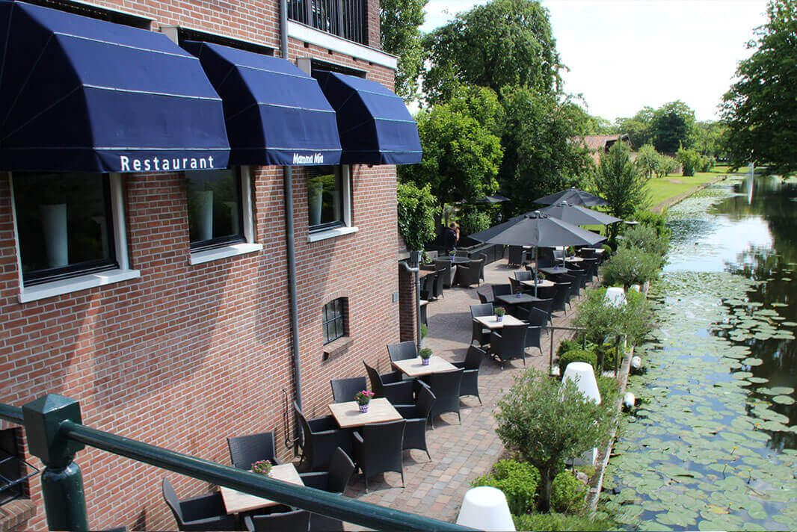
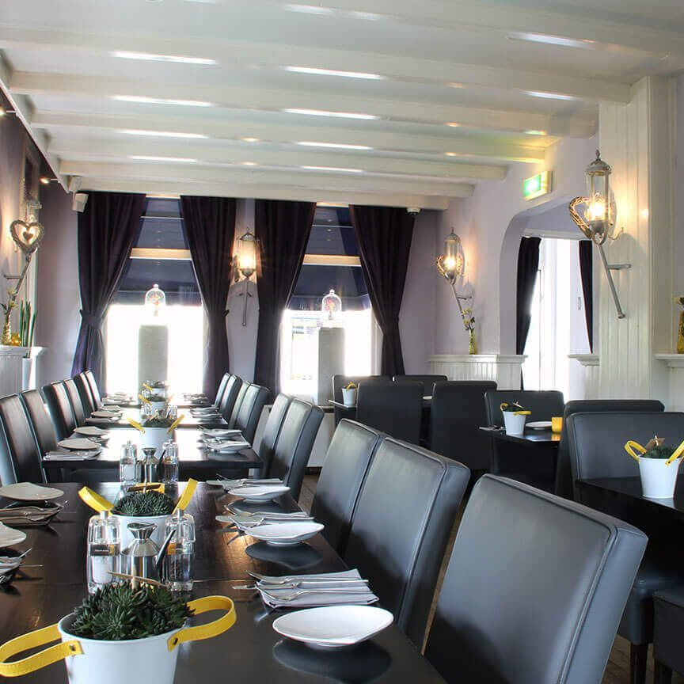
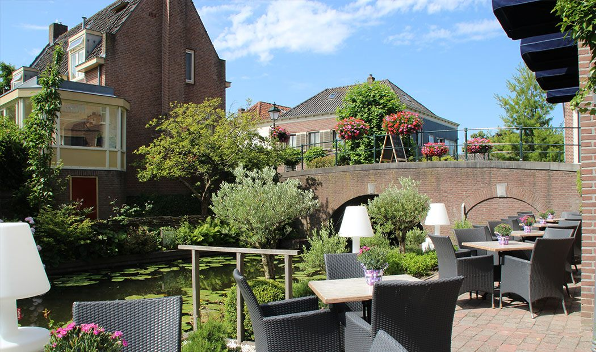
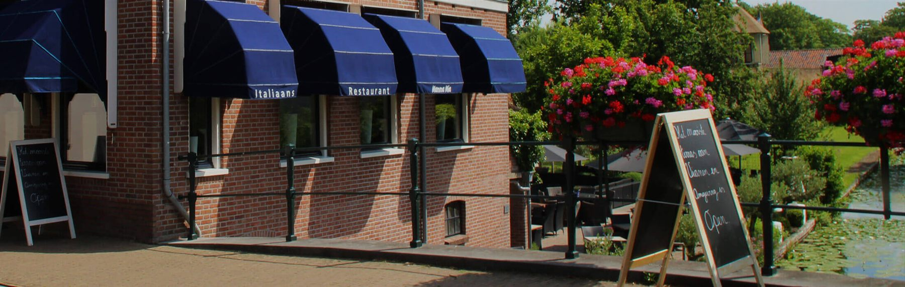
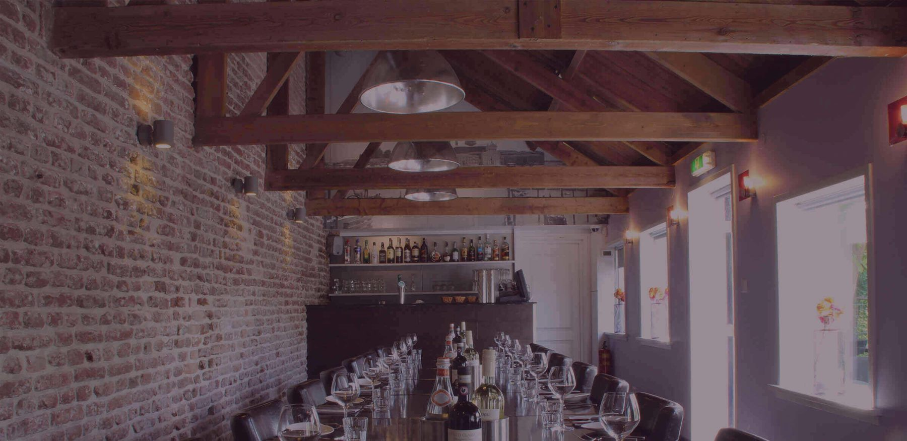
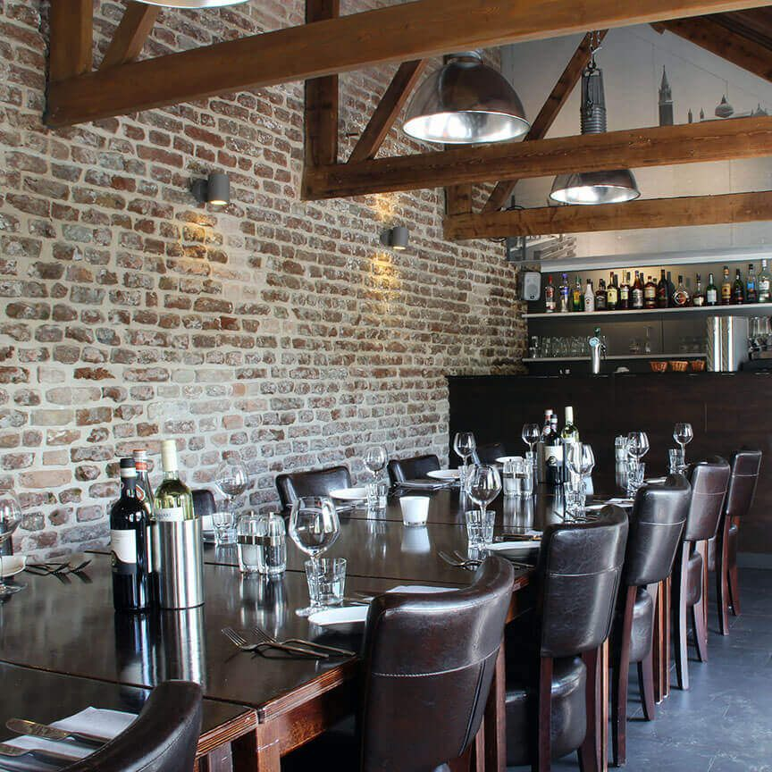
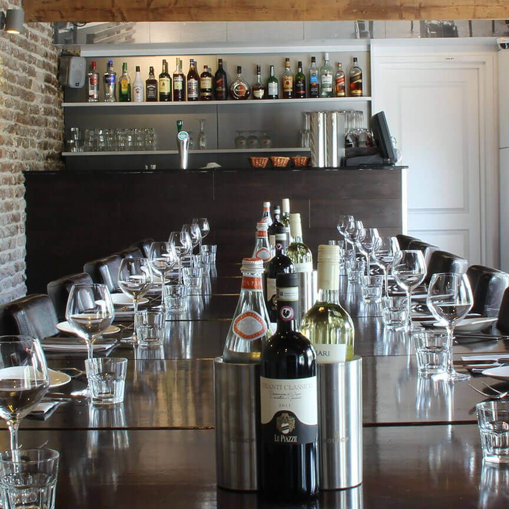

Borrel
De knusse sfeer maakt Het Achterhuis de ideale locatie voor een borrel. Wij verzorgen de volledige borrel en richten de ruimte naar wens in met statafels of zitplaatsen.

Real Italian Flavour
Puur Italië proeven in ons sfeervolle restaurant, het knusse achterhuis of op het mooiste terras van Vianen.
Dinsdag t/m zaterdag vanaf 12.00 uur, zondag vanaf 14.00 uur
Wij zijn gespecialiseerd in authentieke Italiaanse gerechten, bereid met verse lokale producten. Naast veel aanbod voor pasta- en pizzaliefhebbers bevat ons menu ook een grote keuze aan vlees en vis.
Probeer bijvoorbeeld onze gerechten met het Waardse Rund: de carpaccio, de pasta Filetto of de gegrilde haasbiefstuk.




Het Achterhuis ligt achter Restaurant Mamma Mia en is de ideale locatie voor uw evenement, zakelijk en privé. Vanaf 10 gasten reserveert u Het Achterhuis voor bijvoorbeeld een vergadering of private dining.
De knusse sfeer maakt Het Achterhuis de ideale locatie voor een borrel. Wij verzorgen de volledige borrel en richten de ruimte naar wens in met statafels of zitplaatsen.
Voor groepen van 10 tot 28 personen verzorgen wij een Italiaans familiediner, met veel variatie: antipasti, pasta, vis, vlees, pizza en een grand dessert.
Een beamer en geluidsinstallatie voor uw presentatie zijn aanwezig. Wij kunnen ook de lunch tijdens uw vergadering verzorgen.
De mogelijkheden zijn groot. Het Achterhuis leent zich ook goed voor een lunch, een feest of een workshop.


“Ik ben zeer onder de indruk van dit restaurant. Zeer goede kwaliteit en smaak. Als voorgerecht gefrituurde inktvisringen met aioli en honing-rozemarijnbrood; een hemels gerecht! Stijlvol geserveerd.”
Benieuwd naar de mogelijkheden voor uw evenement? Neem contact met ons op, dan bespreken we het samen.
Geef uw bestelling vooraf telefonisch door, dan staat alles op het afgesproken tijdstip voor u klaar. U kunt ook direct langskomen, al is de wachttijd dan wat langer. U bestelt van de lunch- en dinerkaart.
Reserveer direct hieronder. Liever telefonisch? Wij zijn bereikbaar op 0347 322 785. Binnenlopen en aan de deur reserveren kan natuurlijk ook.
Voor groepen vanaf 10 personen: vraag naar Het Achterhuis.
0347 322 785
info@mammamiavianen.nl
| Maandag | gesloten |
|---|---|
| Dinsdag | 12.00 – 22.00 |
| Woensdag | 12.00 – 22.00 |
| Donderdag | 12.00 – 22.00 |
| Vrijdag | 12.00 – 22.00 |
| Zaterdag | 12.00 – 22.00 |
| Zondag | 14.00 – 22.00 |